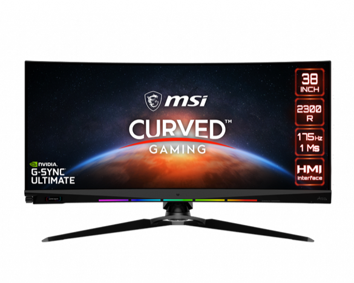

Метавселенная на подходе, и Вы, наверное, слышали: она изменит наш образ жизни, Но она потребует мощного оборудования. Что выберешь ты?
Десктопы
Мониторы
Игры
Творчество
Плоский
Изогнутый
ЭКШН
СТРАТЕГИИ
ММО
СИМУЛЯТОРЫ
МУЗЫКА
ФОТО/ВИДЕО
АРТ/МОДЕЛИРОВАНИЕ
СТРИМИНГ
FULL HD
ДО 2K
ДО 4K
FULL HD
ДО 2K
ДО 4K
про гейминг
любители
QD монитор
Монитор без QD
QD монитор
Монитор без QD
Новинка 1000R
1000R
Новинка 1000R
1000R
Новинка 1000R
1000R

MAG Infinite s3
Процессор 11-го поколения Intel® Core™ i7-11700 и память DDR4
Графика до MSI GeForce® RTX 3070
Оптимизированная вентиляция
Легкий апгрейд Накопители, процессор, видеокарта – все эти составляющие легко заменяются по мере необходимости.

MPG Trident 3
Процессор 11-го поколения Intel® Core™ i7
Графика до MSI GeForce RTX™ 3060 Ti AERO ITX GDDR6
Корпус всего 4.72 литра - самый компактный игровой ПК
Система охлаждения Silent Storm Cooling 2: раздельные отсеки для процессора и видеокарты

MEG Trident X
Процессор 11-поколения Intel® Core™ i9-11900K
Графика до серии MSI GeForce RTX™ 3090 GDDR6X
Система охлаждения Silent Storm Cooling 3: раздельные отсеки для процессора, видеокарты и блока питания
2 порта Thunderbolt 4: до 40 Гбит/с и поддержка 8K-дисплеев, а также быстрая подзарядка гаджетов.
MAG Infinite s3
Процессор 11-го поколения Intel® Core™ i7-11700 и память DDR4
Графика до MSI GeForce® RTX 3070
Оптимизированная вентиляция
Легкий апгрейд Накопители, процессор, видеокарта – все эти составляющие легко заменяются по мере необходимости.

MEG INFINITE X
Процессор 11 поколения Intel® Core™ i9 -11900K
Графика MSI GeForce® RTX 3090 24ГБ GDDR6X graphics
Эксклюзивная система охлаждения Silent Storm Cooling 2
Встроенное жидкостное охлаждение MSI AIO обеспечивает производительность и стабильность
MAG Infinite s3
Процессор 11-го поколения Intel® Core™ i7-11700 и память DDR4
Графика до MSI GeForce® RTX 3070
Оптимизированная вентиляция
Легкий апгрейд Накопители, процессор, видеокарта – все эти составляющие легко заменяются по мере необходимости.

MAG Codex 5
Процессор 11-го поколения Intel® Core™ i7-11700
Графика до MSI GeForce RTX™ 3070
Эффективная система вентиляции обеспечивает оптимальные условия работы компонентов
Продуманная конструкция корпуса облегчает апгрейд компонентов
MEG Trident X
Процессор 11-поколения Intel® Core™ i9-11900K
Графика до серии MSI GeForce RTX™ 3090 GDDR6X
Система охлаждения Silent Storm Cooling 3: раздельные отсеки для процессора, видеокарты и блока питания
2 порта Thunderbolt 4: до 40 Гбит/с и поддержка 8K-дисплеев, а также быстрая подзарядка гаджетов.
MPG Trident 3
Процессор 11-го поколения Intel® Core™ i7
Графика до MSI GeForce RTX™ 3060 Ti AERO ITX GDDR6
Корпус всего 4.72 литра - самый компактный игровой ПК
Система охлаждения Silent Storm Cooling 2: раздельные отсеки для процессора и видеокарты

MPG Trident A
Процессор 11-го поколения Intel® Core™ i7-11700
Графика до серии MSI GeForce RTX™ 3070 GDDR6
Система охлаждения Silent Storm Cooling 3: раздельные отсеки для процессора, видеокарты и блока питания
Малый объем корпуса для игрового ПК: 10 литров
MEG Trident X
Процессор 11-поколения Intel® Core™ i9-11900K
Графика до серии MSI GeForce RTX™ 3090 GDDR6X
Система охлаждения Silent Storm Cooling 3: раздельные отсеки для процессора, видеокарты и блока питания
2 порта Thunderbolt 4: до 40 Гбит/с и поддержка 8K-дисплеев, а также быстрая подзарядка гаджетов.
MEG Trident X
Процессор 11-поколения Intel® Core™ i9-11900K
Графика до серии MSI GeForce RTX™ 3090 GDDR6X
Система охлаждения Silent Storm Cooling 3: раздельные отсеки для процессора, видеокарты и блока питания
2 порта Thunderbolt 4: до 40 Гбит/с и поддержка 8K-дисплеев, а также быстрая подзарядка гаджетов.

MEG AEGIS Ti5
Процессор 11-го поколения Intel® Core™ i9-11900 DDR4
Графика MSI GeForce® RTX 3090
Эффективная система охлаждения Silent Storm Cooling 4
Уникальный геймерский контроллер Gaming Dial

Artymis 242C
Изогнутый экран: кривизна 1000R идеально соответствует анатомии человека и снижает усталость глаз
высокая частота обновления экрана
низкое время отклика
Режим Night Vision: «ночное зрение» для улучшенной ориентации в темных игровых сценах

MEG381CQR+
высокое разрешение (3840 x 1600 пикселей) обеспечивает четкое и детализированное изображение
повышенное качество отображения динамичных игровых сцен
Повышенная частота обновления экрана
Эксклюзивный интерфейс HMI (Human Machine Interface): выбор настроек может осуществляться с помощью контроллера Gaming Dial и дополнительного экрана

THE NEXT PLAYGROUND